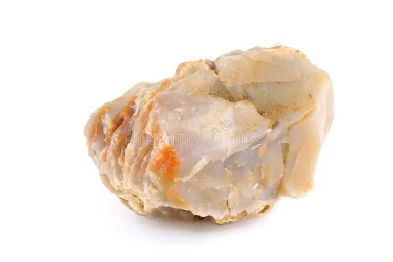
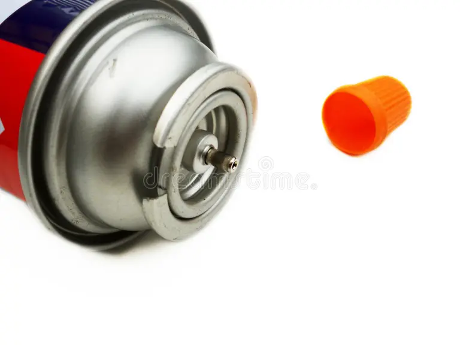

1. Pregătește experimentul
2. Recunoaște stările de agregare



3. Compară proprietățile
4. Observă difuzia
Adaugă o picătură de colorant, apoi urmărește trei momente succesive fără să amesteci apa.
t = 0 s
6. Evaluare finală
ID raport:
Copie locală: